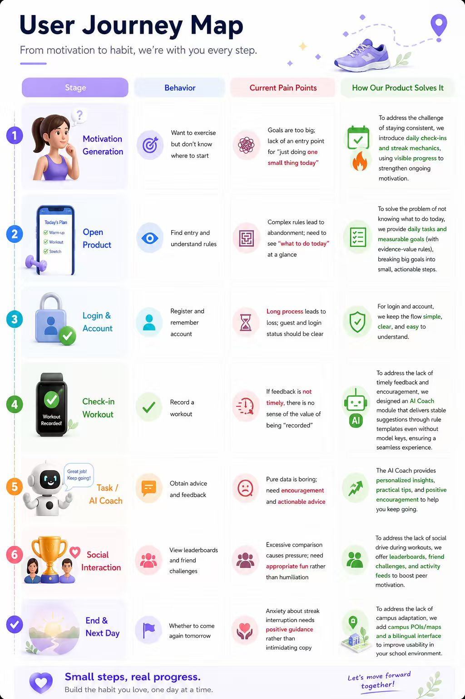
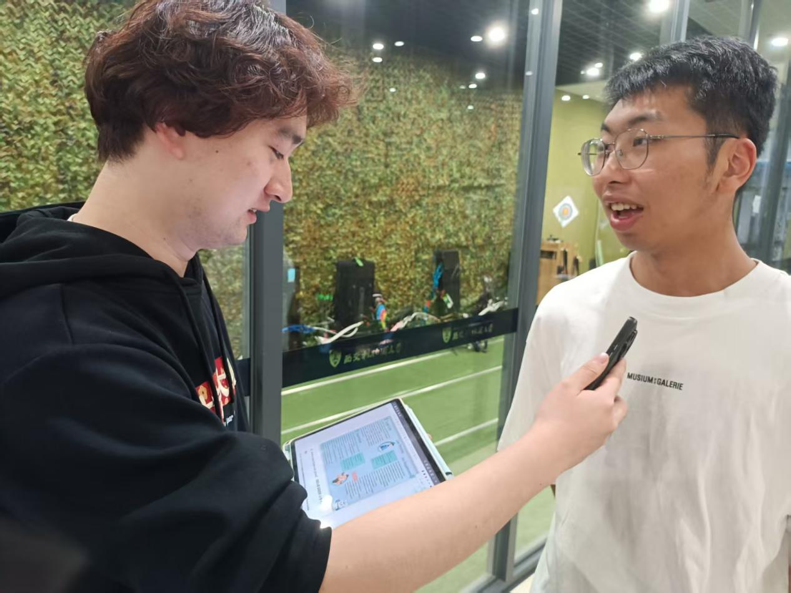
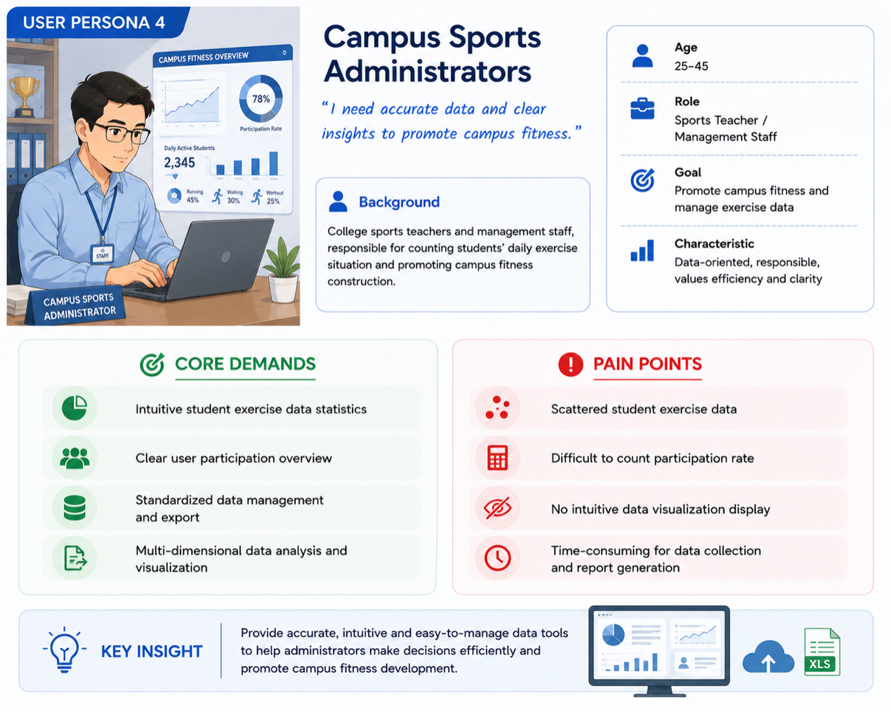

2.1 User Journey Map

Key Journey Insights
During the user journey analysis, emotional changes and pain points were identified at each stage:
At the onboarding stage, users may feel confused if core features are not clearly presented.
During task execution, lack of visible progress feedback reduces motivation.
In the social interaction stage, complex steps may cause frustration and reduce engagement.
Therefore, the design focuses on improving feature visibility, enhancing feedback mechanisms, and simplifying interaction paths.
2.2 Essential Fun-oriented System Requirements (Projectile List)
Real-time Gamified Feedback & Incentive Requirement: The system must provide immediate visual feedback after each exercise check-in and task completion, including streak number dynamic display, progress bar real-time update, ranking list real-time refresh and achievement pop-up reminder, allowing users to quickly obtain a sense of accomplishment and satisfaction, avoiding the problem of no intuitive exercise return and low exercise fun.
Low-threshold Lightweight Operation Experience Requirement: The system must simplify all core exercise operation steps, set homepage one-click check-in and quick functional entrance, reduce unnecessary page jumps and redundant operations, enable novice users to get started in one second, eliminate operation resistance, and ensure exercise participation is simple, fast and not time-consuming.
Social Interactive & Personalized Diversified Experience Requirement: The system must integrate AI personalized fitness coach guidance and student training partner community interaction functions, realize exclusive fitness suggestion push and friend exercise mutual supervision and challenge interaction, enrich exercise gameplay, avoid single fitness mode, and enhance long-term exercise willingness and fun sense of users.
2.3 Living Evidence (User Interview & Field Observation)
The user research was conducted through interviews and observational analysis among campus students, focusing on their exercise habits, motivation levels, and interaction preferences.
Interview 1
Interview Date: March 16, 2026
Interview Location: Multi-Purpose Fitness Hall, Campus Gymnasium
Interviewee: Coach Zhang, a senior personal trainer at the gymnasium with 6 years of frontline teaching experience. He specializes in designing structured training plans for beginners and has rich expertise in daily fat loss and posture correction. He is widely known at the gymnasium as a patient and approachable coach.
During the interview, I discussed common fitness misconceptions, beginner advice, and tips for long-term consistency with Coach Zhang. Using real-life examples from his students, he addressed key beginner concerns such as how to avoid workout injuries and how to balance diet during fat loss. He also shared his perspective on the fitness industry, emphasizing that scientific training and gradual progression are the core principles for ordinary people pursuing fitness goals. The interview helped me gain a clearer understanding of both the professional aspects and common pitfalls of fitness.

Interview 2
Interview Date: March 28, 2025
Interview Location: Archery Hall, Xi’an Jiaotong-Liverpool University Gymnasium
Interviewee: Coach Wan, an assistant coach for the archery program at the gymnasium and a passionate sports enthusiast. He has extensive experience in archery instruction and introductory training guidance. He also maintains an active routine across multiple sports and has developed his own unique insights into sports concepts for the general public.
During the interview, I discussed topics such as the meaning of sports, the charm of archery and how to develop long-term exercise habits with Coach Wan. Drawing on his teaching and personal sports experience, he shared his views on sports: he believes sports are not just about pursuing performance or physical appearance, but also a way to regulate one’s mindset and focus on oneself. Archery, in particular, helps build concentration and emotional control, serving as a sport that allows people to slow down and connect with themselves. He also emphasized that for ordinary people, finding a sport they truly enjoy and embracing the process is far more important than blindly following fitness trends.

Interview 3
Interview Date: March 22, 2026
Interview Location: TY Gym, Haimen, Nantong City
Interviewee: Coach Ding, a senior fitness coach with eight years of front-line teaching experience, specializing in movement correction and strength training.
During the interview, I discussed with Coach Ding about the difficulties and limitations of movement correction. He believes that the hardest part of correcting movements is not the technique itself, but the lack of body awareness among trainees - many people cannot clearly see or feel their mistakes. Even if the coach demonstrates repeatedly, the trainees' movements tend to deform when they get tired. He pointed out that the coach's limitation lies in the inability to control the quality of each repetition for the trainees; ultimately, it is up to the trainees to develop their proprioception. He suggested that doing a correct movement slowly and thoroughly is more important than blindly adding weight.

Interview 4
Interview Date: April 2, 2026
Interview Location: Pomelo Sports Gym, Wenxing Square
Interviewee: Jack.Z, an amateur fitness enthusiast who has been consistently training for over two years. During this period, he has experienced plateaus in his movements, fluctuations in motivation, and minor injuries. He has genuine insights into how ordinary people can keep going.
During the interview, I discussed with Jack.Z the difficulties encountered during the fitness process and how to persevere. He admitted that the biggest challenge was not the lack of time, but the plateau period when he couldn't see any progress - his strength didn't increase and his body shape remained unchanged, which made him doubt himself easily. Additionally, he also experienced shoulder discomfort and fluctuating training motivation. When it came to how to persist, he said that he no longer focused on short-term changes but regarded fitness as a daily habit like eating and sleeping. When he was in a bad state, he would do light weights and shorten the training time, but try not to stop training completely. He also mentioned that finding a training partner who could keep up and recording every training session were effective ways to help him get through the low periods.

Interview 5
Interview Date: April 10, 2026
Interview Location: Pomelo Sports Gym, Wenxing Square
Interviewee: Shenghao Liao , a fitness novice who has been engaged in systematic training for less than two months. Before this, he had almost no exercise habits and was still in the process of exploring gym equipment and training procedures.
During the interview, Liao shared that beginners’ biggest challenge isn’t movement difficulty, but fear—fear of making mistakes, getting hurt, or looking foolish. He also felt lost about what and how long to train, with online tutorials only adding to the confusion. He was lucky to have a patient coach who taught him just two or three moves in the first sessions, leaving him less tired and less scared. His advice: don’t rush into a yearly membership or many classes. First, go during quiet hours to get comfortable. And don’t chase soreness—showing up consistently two or three times a week matters more than exhausting yourself in one go.
The statistical results obtained from a survey of 200 students